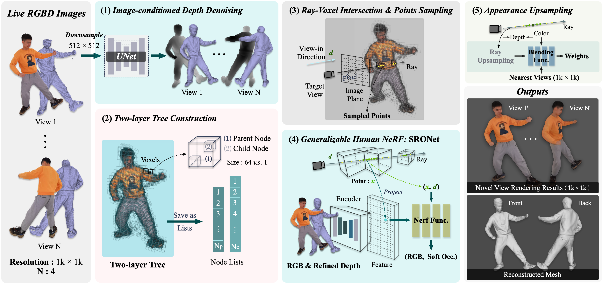

TL;DR: We propose SAILOR, a novel method for human free-view rendering and reconstruction from very sparse (e.g., 4) RGBD streams. It learns a hybrid representation of radiance and occupancy fields, which can handle unseen performers without additional fine-tuning.
Our free-view rendering results and bullet-time effects given input sparse RGBD streams on our real-captured dataset ( Unseen performers ).
Immersive user experiences in live VR/AR performances require a fast and accurate free-view rendering of the performers. Existing methods are mainly based on Pixel-aligned Implicit Functions (PIFu) or Neural Radiance Fields (NeRF). However, while PIFu-based methods usually fail to produce photorealistic view-dependent textures, NeRF-based methods typically lack local geometry accuracy and are computationally heavy (e.g., dense sampling of 3D points, additional fine-tuning, or pose estimation). In this work, we propose a novel generalizable method, named SAILOR, to create high-quality human free-view videos from very sparse RGBD live streams. To produce view-dependent textures while preserving locally accurate geometry, we integrate PIFu and NeRF such that they work synergistically by conditioning the PIFu on depth and then rendering view-dependent textures through NeRF. Specifically, we propose a novel network, named SRONet, for this hybrid representation. SRONet can handle unseen performers without fine-tuning. Besides, a neural blending-based ray interpolation approach, a tree-based voxel-denoising scheme, and a parallel computing pipeline are incorporated to reconstruct and render live free-view videos at 10 fps on average. To evaluate the rendering performance, we construct a real-captured RGBD benchmark from 40 performers. Experimental results show that SAILOR outperforms existing human reconstruction and performance capture methods.
Method

Fig 1. Overview of SAILOR. Given RGBD streams captured by 4 Azure Kinect sensors as inputs, (1) a Depth Denoising Module first removes noise and fills the holes of raw depths conditioned on the RGB images. (2) With the denoised depths, a Two-Layer Tree Structure is constructed to store the global geometry in discretization. (3) Efficient Ray-Voxel Intersection and Points Sampling are performed for rendering. (4) A novel SRONet network is proposed to synergize the radiance and occupancy fields, for 3D reconstruction and free-view rendering. (5) The outputs of SRONet are then upsampled via Ray Upsampling and Neural Blending to produce the final results in 1𝑘 resolution.
Overview Video
Part 1: Demo Video
Part 2: Fast Forward Video (with audio)
Results
Fig 2. (1) Depth Denoising Module. Visualization of our depth denoising results on our real captured RGBD images.
Fig 3. Static 3D human reconstruction and free-view rendering results using four RGBD images.
Fig 4. Dynamic human free-view rendering results and bullet-time effects from four-view RGBD videos.
Fig 5. Visualization of rendering comparisons on our real-captured dataset (row 1-5) and the THuman2.0 dataset (row 6).
Interactive rendering
Results of interactive rendering are obtained using a PC containing 2 Nvidia RTX 3090, an Intel i9-13900k, and an MSI Z790 god-like motherboard.
Live demo
Results of the live demo are obtained using four (for full-body) or three (for portrait) Azure Kinect-V4 cameras, and the PC configured as above.
Citation
@article{dong2023sailor,
author = {Zheng Dong, Xu Ke, Yaoan Gao, Qilin Sun, Hujun Bao, Weiwei Xu, Rynson W.H. Lau},
title = {SAILOR: Synergizing Radiance and Occupancy Fields for Live Human Performance Capture},
year = {2023},
journal = {ACM Transactions on Graphics (TOG)},
volume = {42},
number = {6},
doi = {10.1145/3618370},
publisher = {ACM}
}